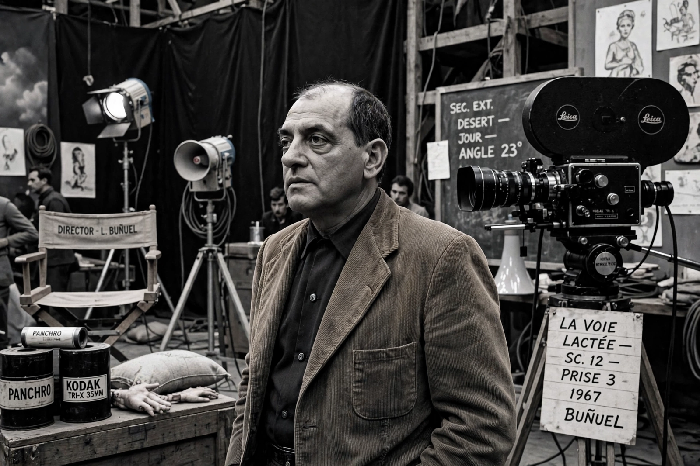

Luis Buñuel Portolés (22 February 1900 – 29 July 1983) was a Spanish and Mexican filmmaker who worked in France, Spain and Mexico. A leading figure of Surrealism, he is widely regarded as one of the greatest and most influential film directors of all time. His career spanned five decades, from the silent avant-garde short Un Chien Andalou (1929), made with Salvador Dalí, to the Oscar-winning The Discreet Charm of the Bourgeoisie (1972). Buñuel's films combine dream logic, black humour and a lifelong assault on bourgeois respectability, organised religion and sexual repression.
| Born | 22 February 1900, Calanda, Aragon, Spain |
|---|---|
| Died | 29 July 1983 (aged 83), Mexico City, Mexico |
| Occupation | Film director, screenwriter |
| Years active | 1929–1977 |
| Movement | Surrealism |
| Notable works | Un Chien Andalou; L'Age d'Or; Los Olvidados; Viridiana; Belle de Jour; The Discreet Charm of the Bourgeoisie |

Buñuel was born in Calanda, Aragon, and educated by Jesuits in Zaragoza before studying in Madrid, where he befriended Dalí and Federico García Lorca at the Residencia de Estudiantes. In Paris he joined the Surrealist group and, with Dalí, made Un Chien Andalou (1929), whose opening shot of a razor slicing an eye became an icon of avant-garde cinema. Its successor, L'Age d'Or (1930), was banned for decades after right-wing protests. The documentary Las Hurdes: Land Without Bread (1933) applied surrealist shock to real Spanish poverty.
After the Spanish Civil War Buñuel worked in the United States and then settled in Mexico, becoming a Mexican citizen in 1949. Within the commercial Mexican industry he made personal works including Los Olvidados (1950), a portrait of Mexico City street children that won the Best Director prize at Cannes, Él (1953), Ensayo de un crimen (1955) and Nazarín (1959).
Viridiana (1961), filmed in Franco's Spain, shared the Palme d'Or at Cannes and was condemned by the Vatican; the regime banned it. Buñuel then worked mainly in France with producer Serge Silberman and writer Jean-Claude Carrière: Diary of a Chambermaid (1964), Belle de Jour (1967), The Milky Way (1969), The Discreet Charm of the Bourgeoisie (1972) — which won the Academy Award for Best Foreign Language Film — The Phantom of Liberty (1974) and his final film, That Obscure Object of Desire (1977).
Buñuel's hallmarks include deceptively plain camerawork, dream sequences that shade into reality, repeated motifs of frustrated desire, and anticlerical and anti-bourgeois satire. His memoir Mon dernier soupir (1982; My Last Sigh) was published the year before his death in Mexico City. He remains the cinema's defining surrealist.